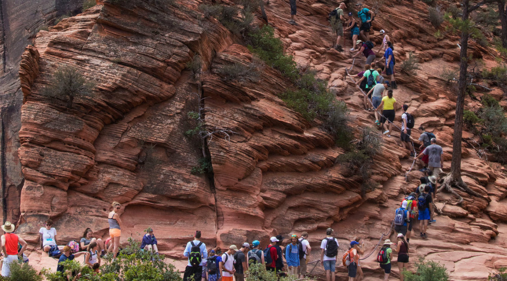

Introduction
Participation in outdoor recreation and tourism has increased massively in the United States, and has been particularly prominent in National Parks. They have become overcrowded, which has led to a number of practical and environmental concerns. This magazine is intended to inform you, the reader, about this issue and its causes and effects.